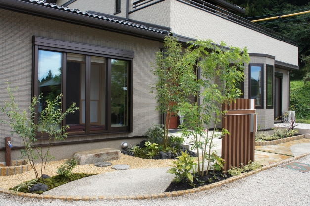
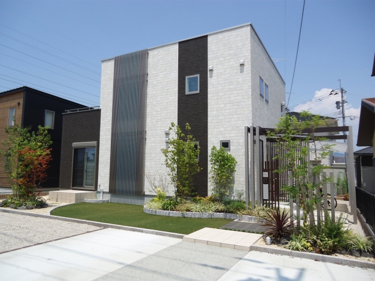
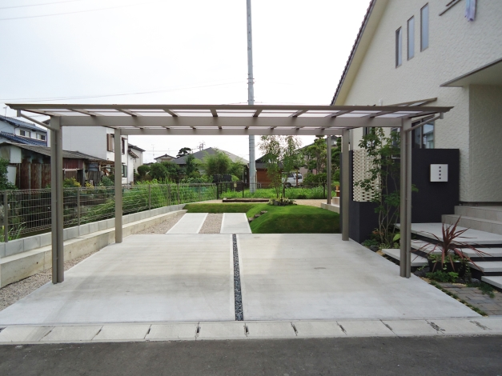
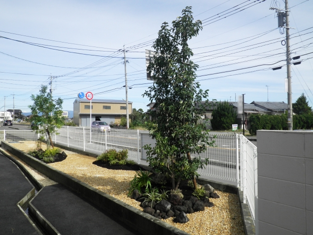
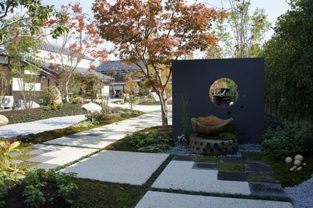

施工事例
G-craftが手掛けたエクステリア・外構の施工例です。
広々カーポートとガレージのあるモダンなエクステリア
カラーコンクリートと芝生で明るい印象のナチュラルモダンな外構
植栽をふんだんに取り入れたシンプルな雑木の庭
大きなシンボルツリーと木陰のテラスのあるモダンなエクステリア
庭仕事が楽しくなる！かわいい立水栓のある洋風エクステリア
広い敷地を活かした本格和風庭園

和と洋 2つのテイストを織り交ぜた住宅のための外構

豊かな植栽と+Gで庭を間取る、モダンなエクステリア

スタイリッシュな目隠し門柱と、カーポートの奥に広がる芝生の庭

福祉施設の敷地内をロックガーデン風にアレンジ
日本庭園や植栽など、造園の施工例です。

本格日本庭園